A one-take demo of online real-world RL — the policy is trained in ~40 minutes directly on hardware, with no resets staged for the camera.
The same residual adaptation pipeline plugs into visual base policies that differ in observations, data sources, architectures, and action-chunk horizons.
Visual base policies can be learned from scalable human videos or from robot teleoperation.
Visual data is abundant, and the visual policies trained on it are strong — but vision alone struggles with contact-rich manipulation, where success hinges on local force and contact geometry that cameras cannot measure.
Tactile data is highly informative for contact, yet it is far harder to collect than visual data and tends to waste the abundant visual data already available if you try to scale it from scratch.
We want an efficient, generalizable, and robust pipeline that adds tactile feedback on top of an existing visual policy — rather than retraining a visuo-tactile policy from scratch.
Inspired by how humans learn: after acquiring a visual prior through imitation, we use online practice — interacting with the world through touch — to learn the contact strategy that completes the task.
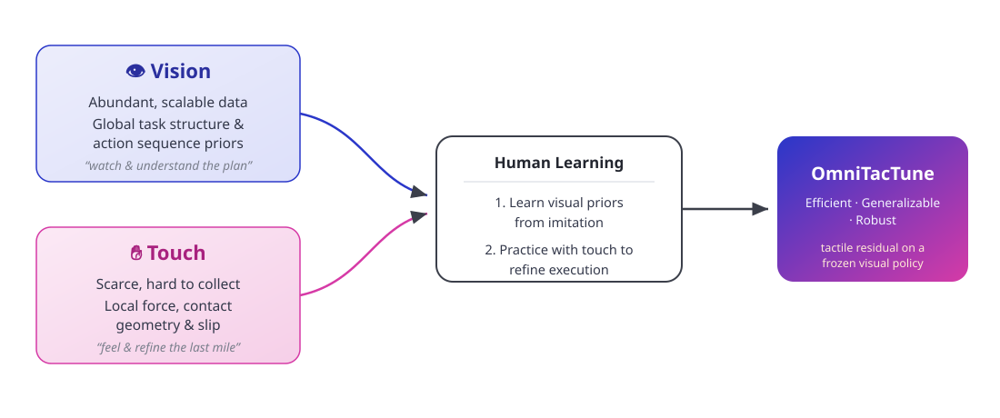
OmniTacTune is a policy-agnostic real-world RL pipeline that adapts tactile feedback to pretrained visual policies through residual correction. It keeps the visual policy frozen as a motion prior and learns a lightweight tactile residual that fixes the contact-rich last mile — generalizing across diverse tasks, base policies, and tactile representations.
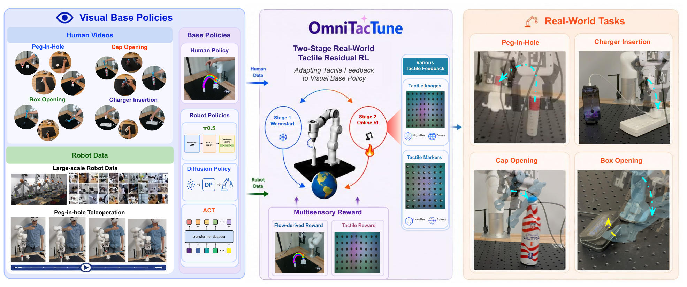
Visual policies learned from human videos, teleoperation, and robot demonstrations offer scalable motion priors, but often fail in contact-rich manipulation, where success significantly depends on local force and contact geometry. Tactile sensing provides these complementary signals, yet tactile data remain costly to collect and hard to generalize across sensors, robots, and tasks. We introduce OmniTacTune, a policy-agnostic real-world RL pipeline that adapts tactile feedback to pretrained visual policies through residual correction. OmniTacTune uses a two-stage design: it first bootstraps tactile-aware learning from autonomous base-policy rollouts, then learns a lightweight tactile residual policy through online interaction. Extensive experiments show that OmniTacTune generalizes across diverse contact-rich tasks, visual base policies, and tactile representations. Across four real-world contact-rich tasks, it improves visual base policies from 5–40% success to 85–100% within 40–80 minutes, demonstrating an efficient path for adapting tactile feedback to scalable visual robot policies.
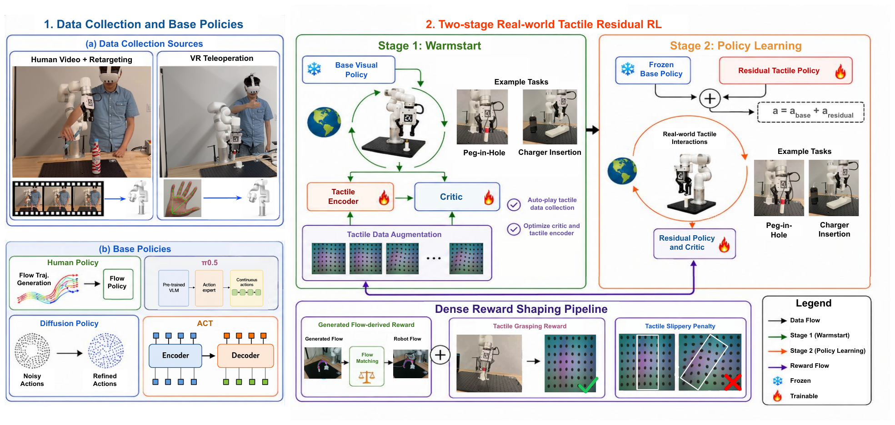
OmniTacTune generates object-centric flow from the initial observation to provide two complementary signals: motion guidance for both the base policy and the residual policy, and a dense flow-derived reward during residual RL. This generated task-level guidance encourages smoother object-centric trajectories while making real-world training more efficient and reliable.
The key question is how one residual actor can correct architecturally diverse visual policies. OmniTacTune addresses this through interface-level agnosticism: the residual actor avoids policy-specific hidden states, visual tokens, or network internals.
Instead, it uses two policy-independent inputs: generated keypoint goals for shared task-level guidance, and the base-policy action chunk for short-horizon motion intent. Together with tactile feedback, this common interface enables closed-loop correction without finetuning the frozen visual policy.
The reward is also independent of the base policy. Instead of rewarding a particular policy representation, OmniTacTune computes dense feedback from task geometry, generated flow, tactile contact, and safety constraints. This lets the same reward train residual RL across different policies and tasks.
At a high level, the reward guides the robot toward the object, encourages stable grasp/contact, and matches observed object motion to the generated object-centric flow. Tactile terms penalize slip or unsafe contact, while a terminal success reward anchors dense shaping to the actual task objective.
Because the bootstrapping buffer holds only a few real contact pairs, we use ControlTac to expand tactile diversity without any extra robot interaction. We first remove the marker pattern from a real tactile image to obtain a marker-free reference, generate new tactile images under different contact forces (ΔF), and then composite the original markers back. Robot states, actions, flow features, and rewards stay unchanged — only the tactile images vary — exposing the encoder and critic to richer contact-forces.
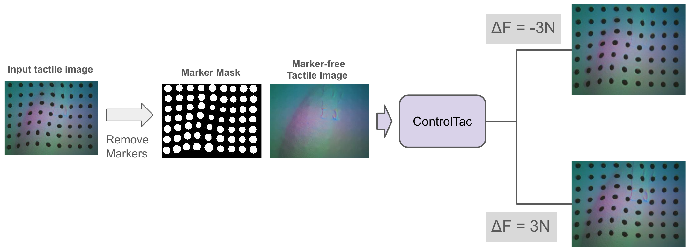
Across all four tasks, OmniTacTune adapts tactile feedback faster and more reliably than prior real-world RL methods, lifting weak base policies to 85–100% success within 40–80 minutes of online practice.
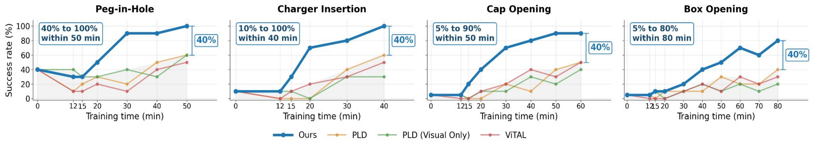
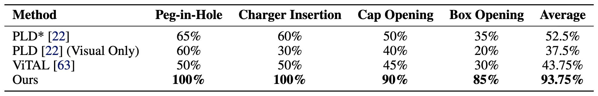
The residual pipeline is not tied to a specific policy architecture. On Peg-in-Hole, OmniTacTune improves five different base policies with different observations, data sources, architectures, and action chunks — within ~50 minutes of real-world practice.
It lifts every base policy by +40% to +60% success, reaching 75–100%. The human flow policy yields the smoothest motion prior and the highest final performance.
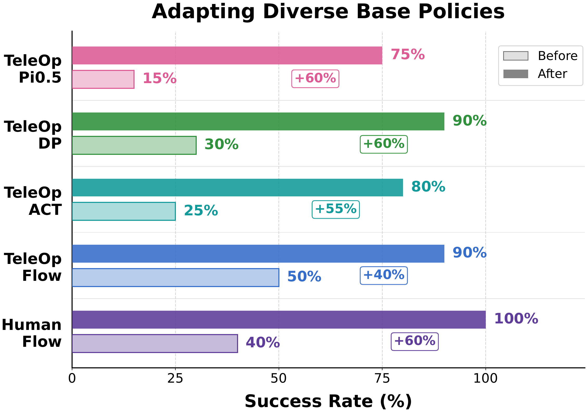
Online tactile residual refinement beats learning a visuo-tactile policy from more demonstrations — even when every imitation baseline is given an extra 50 minutes of teleoperation data.
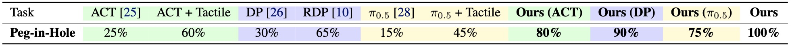
OmniTacTune is not tied to a particular tactile representation. On Peg-in-Hole and Charger Insertion, it adapts equally well with pretrained tactile image encoders (AnyTouch2, Sparsh, T3) and with compact low-dimensional tactile markers.
AnyTouch2 and markers reach comparable final performance, while T3 and Sparsh lag slightly on the more dynamic Charger Insertion — likely because they are not pretrained on dynamic-contact tactile data.
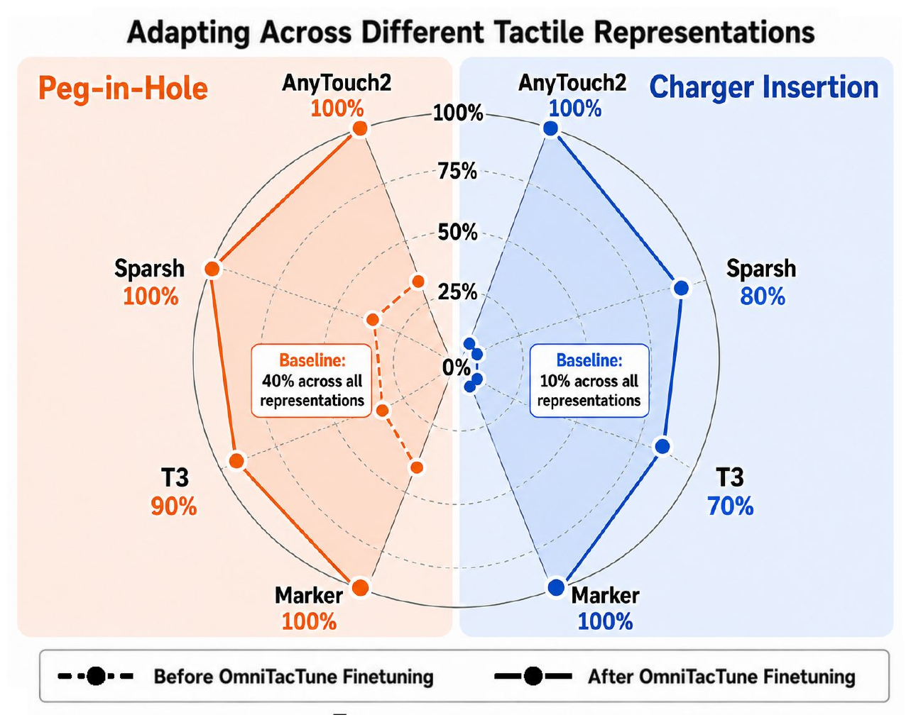
We ablate the four core design choices of OmniTacTune on Peg-in-Hole. Each component contributes to faster, more stable adaptation.
Removing any component of the multi-sensory reward slows learning and lowers final success — reaching, dense flow, and tactile rewards are all needed.
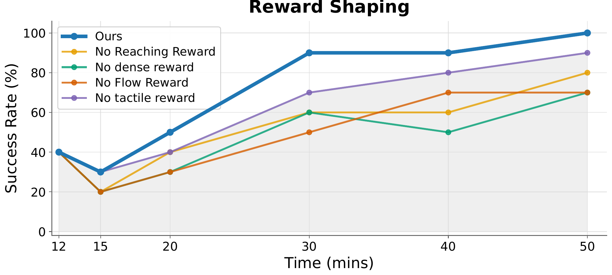
Trajectory-level keypoint guidance with contact-aware gating outperforms per-step keypoints and raw visuo-tactile conditioning.
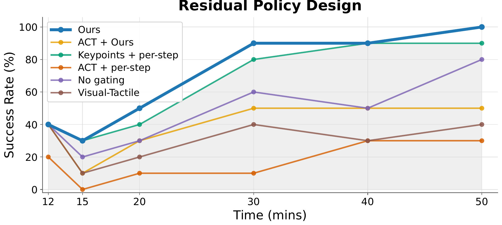
Optimizing the tactile encoder + critic (with ControlTac augmentation) during bootstrapping is critical for stable residual RL.
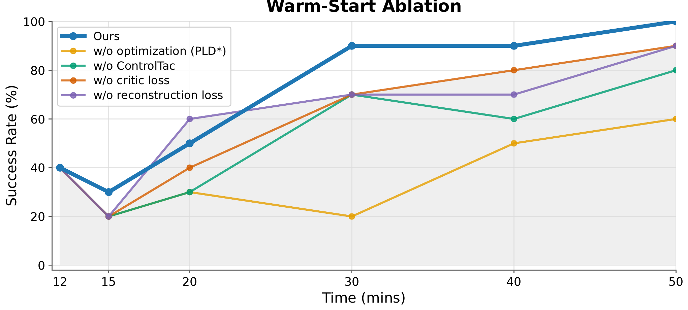
Both the residual scheduler and action scaling matter; an appropriate scale (0–0.15) keeps exploration stable and sample-efficient.
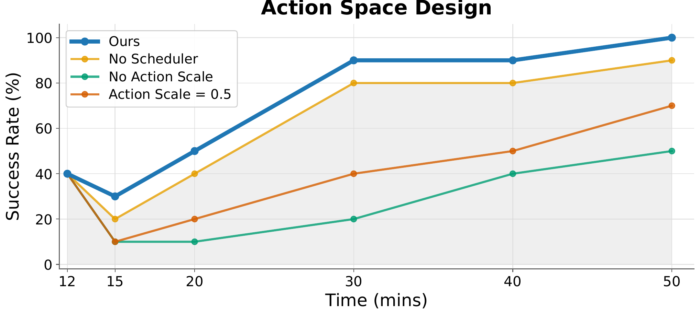